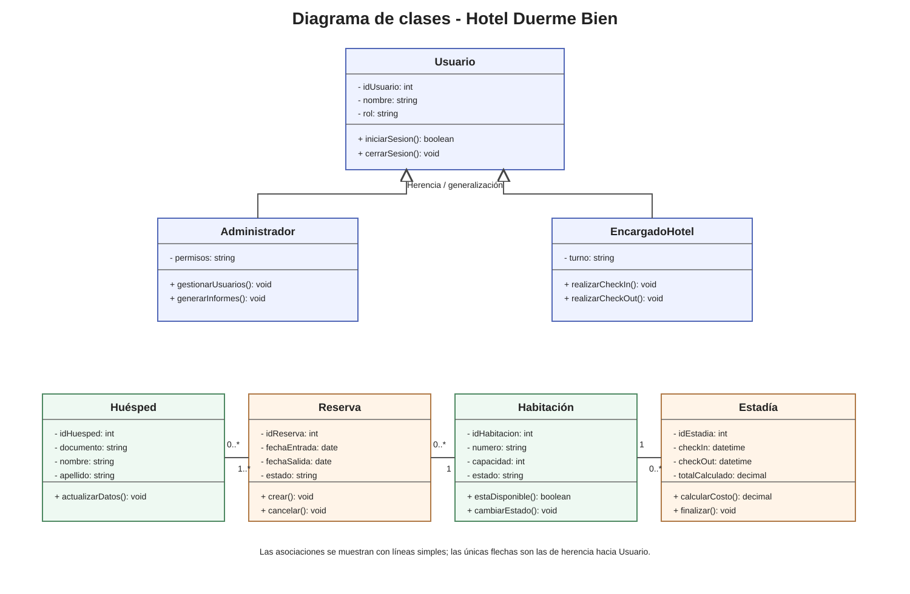

Evaluación 2 - Requerimientos y modelado UML
Todos los elementos enumerados por la pauta en una sola página.
Lo que pide la pauta
Ajustar requerimientos con retroalimentación de Evaluación 1; diagrama de casos de uso; diagrama de flujo; diagrama de base de datos; prototipo de interfaz (wireframes/mockups); planificación inicial en Kanban.
1. Ajuste de requerimientos
Los requerimientos se mantienen identificados como RF/RNF y vinculados a la matriz de trazabilidad. La retroalimentación real del docente no aparece en los archivos entregados, por lo que no se inventaron cambios.
Requerimientos Trazabilidad2. Diagrama de casos de uso
Actores principales: Administrador y Encargado de hotel. Los casos de uso usan nombres con verbo y las relaciones include se mantienen solo cuando la función incluida es necesaria.

3. Diagrama de flujo
Proceso representado: check-in y asignación de habitación.

4. Diagrama de base de datos
Entidades principales: Usuario, Habitación, Huésped, Reserva, Reserva_Huésped, Estadía y Estadía_Huésped.

5. Normalización trabajada en clases
Se aplican 1NF, 2NF y 3NF para reducir redundancia y mantener dependencias correctas.

6. Prototipo de interfaz - Sketch

7. Prototipo de interfaz - Wireframe

{kind=link}
8. Prototipo de interfaz - Mockup

{kind=link}
9. Prototipo navegable
El material de prototipos indica que debe poder probarse navegación, interacción, botones y validaciones. Esta misma interfaz es la versión navegable.
10. Planificación inicial - Kanban
| Por hacer | En proceso | Terminado |
|---|---|---|
| Incorporar retroalimentación real de Evaluación 1. | Revisión final de coherencia. | Alcance y requerimientos. |
| Validar fórmula exacta de costos. | Casos de uso y flujo. | |
| Validar datos obligatorios del huésped. | Modelo de datos y normalización. | |
| Validar permisos por perfil. | Sketch, wireframe y mockup. | |
| Confirmar reglas definitivas de reservas. | Prototipo funcional y trazabilidad. |
11. Material complementario entregado en clases
Diagramas de clase: se trabajaron como apoyo, aunque no aparecen enumerados como entregable obligatorio de Evaluación 2.
